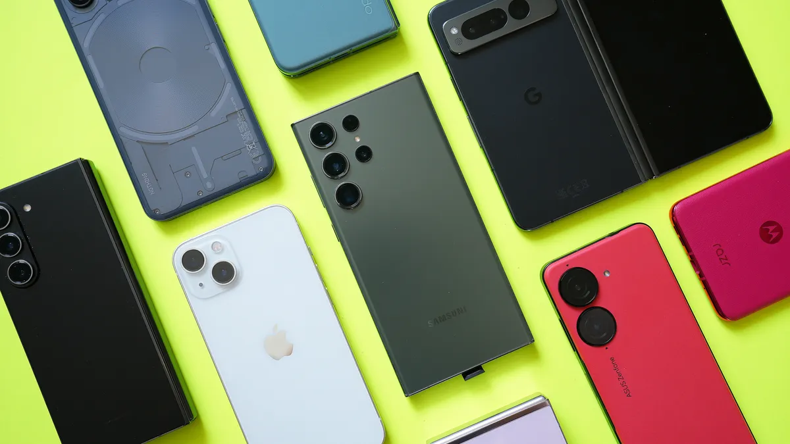

移動運算時代的興起
隨著科技的發展,智慧手機和平板電腦逐漸成為人們生活中不可或缺的設備。它們的興起不僅改變了我們的溝通方式,同時也影響了工作、娛樂等各個層面。
影響生活的各個層面
移動設備的普及,為我們帶來了便利性、即時性和個人化體驗。同時,也引發了一些社會問題,例如過度依賴手機、資訊隱私等。
2007年 - 蘋果推出首款iPhone
蘋果於2007年推出首款iPhone，這款設備融合了電話、iPod以及互聯網功能，改變了人們對手機的認知。觸摸屏設計和App Store的出現，徹底改變了智能手機市場。
2008年 - 谷歌推出Android操作系統
Android操作系統的推出為市場帶來了開源的選擇，使得各種製造商能夠使用這一平台，極大地促進了智能手機的普及和多樣化。
2010年 - 三星推出Galaxy S系列
三星Galaxy S系列的推出，使其成為iPhone的主要競爭對手，推動了智能手機技術的快速進步，特別是在屏幕技術和攝影功能方面。
2011年 - 4G LTE網絡的普及
4G LTE技術的廣泛應用，使得智能手機的網絡速度大幅提升，促進了流媒體、視頻通話和各種即時應用的發展。
2013年 - iPhone 5s配備指紋識別技術
iPhone 5s首度引入Touch ID指紋識別技術，提高了智能手機的安全性，並引領了生物識別技術在手機上的應用潮流。
2014年 - Apple Pay和移動支付的興起
Apple Pay的推出標誌著移動支付時代的到來，改變了人們的支付方式，使智能手機成為日常交易的便捷工具。
2016年 - iPhone 7取消耳機插孔
蘋果在iPhone 7上取消了3.5毫米耳機插孔，引發了無線耳機市場的爆炸式增長，如AirPods的成功。
2017年 - iPhone X推出全面屏和Face ID
iPhone X的全面屏設計和Face ID面部識別技術，引領了全面屏設計潮流和更先進的生物識別技術。
2019年 - 5G智能手機的推出
5G技術的推出和應用，為智能手機帶來了更快的網絡速度和更低的延遲，推動了新一代互聯網應用和物聯網的發展。
2020年 - 可折疊手機的問世
三星Galaxy Fold等可折疊手機的出現，為智能手機的形態帶來了新的可能性，融合了手機和平板電腦的功能。
未來的發展趨勢
展望未來,移動設備將持續演進,並與人工智能、物聯網等技術深度融合,帶來更多創新應用。